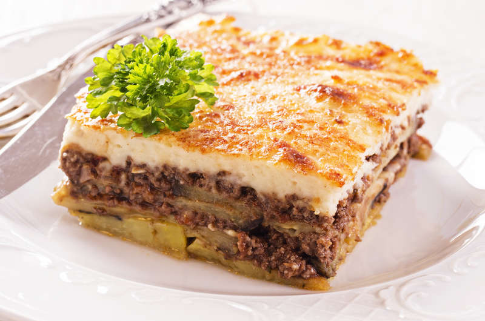

500g/1lb 2oz Maris Piper potatoes, peeled and thinly sliced
freshly ground black pepper
For the White Sauce
50g/2oz butter
50g/2oz plain flour
400ml/14fl oz milk
25g/1oz Parmesan, finely grated
1 tsp finely grated nutmeg
1 free-range egg, beaten

This Hairy Bikers' moussaka is a joy to behold, with cinnamon-spiced lamb mingling with aubergines and a delicious creamy sauce.
Put the lamb, onion, garlic, oregano, mint, bay and cinnamon in a large heavy-based frying pan and cook over a medium heat for 10 minutes, stirring with a wooden spoon to break up the meat.
Stir in the flour and a good pinch of salt and pepper. Add the wine, tomatoes and tomato purée and bring to a simmer. Cook for 30 minutes, stirring occasionally, until the lamb is tender and the sauce has thickened. Season again if needed and set aside.
Meanwhile, place the aubergine slices in a colander and sprinkle with the tablespoon of salt. Set aside for 10 minutes.
Rinse the aubergine slices under cold running water and pat dry with a clean tea towel. Heat 3 tablespoons of the oil in a large heavy-based frying pan and fry the aubergines for 2–3 minutes on each side, adding more oil when necessary. Remove from the pan and set aside to drain on kitchen paper.
Cook the potatoes in boiling water for 5 minutes, then drain in a colander under running water until cold.
Preheat the oven to 200C/180C Fan/Gas 6.
To make the white sauce, melt the butter in a large saucepan and stir in the flour. Cook for a few seconds, then gradually stir in the milk. Add half the Parmesan and the grated nutmeg. Simmer the sauce gently for 4–5 minutes, stirring regularly. Season to taste with salt and pepper.
Remove the saucepan from the heat and allow the sauce to cool. When cooled, stir in the egg.
Spoon one-third of the meat sauce into a shallow ovenproof dish large enough to hold 2.5 litres. Cover loosely with a third of the potatoes and then a third of the aubergines – you don't need complete layers, just to arrange them roughly on top. Repeat the layers twice more, finishing with the aubergines. Pour over the white sauce, making sure it covers everything in a thick, even layer. Sprinkle with the remaining Parmesan. Bake for 35–45 minutes, or until deep golden-brown and bubbling.